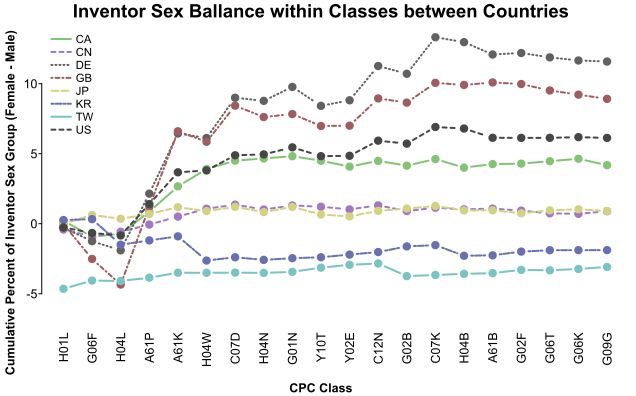

example-patentsview_inventors_p2.RmdBuilt with R 4.2.1
In the previous example we assigned sex to inventors and took a high-level look at some differences between sex groups.
This example focuses on inventors that were active in the last year, and tries to take a deeper look at group differences.
library(uspto)
outDir <- "../patentsview/"We’ll start by collecting a unified set of patents with inventors who were associated with a patent in 2021:
latest_inventors_file <- paste0(outDir, "latest_inventors.csv.xz")
if (file.exists(latest_inventors_file)) {
latest_inventors <- vroom::vroom(latest_inventors_file, show_col_types = FALSE)
} else {
# 1. identify patents granted in the most recent year
patents <- download_patentsview_bulk("patent", outDir, make_db = TRUE)
latest_patents <- as.character(dplyr::collect(dplyr::select(
dplyr::filter(patents, date > as.Date("2020-12-31")), number
))$number)
# 2. identify the inventors associated with those patents
patent_inventors <- download_patentsview_bulk(
"patent_inventor", outDir,
make_db = TRUE,
partition = list(series_code = function(d) substr(d$patent_id, 1, 2))
)
latest_inventors <- dplyr::collect(dplyr::select(dplyr::filter(
patent_inventors, patent_id %in% latest_patents
), inventor_id))
latest_inventors <- dplyr::collect(dplyr::filter(
patent_inventors, inventor_id %in% latest_inventors$inventor_id
))
latest_inventors$n_inventors <- as.numeric(tapply(
latest_inventors$inventor_id, latest_inventors$patent_id, length
)[latest_inventors$patent_id])
# 3. combine patent and inventor data
patents_target <- as.data.frame(dplyr::collect(dplyr::select(dplyr::filter(
patents, as.character(number) %in% latest_inventors$patent_id
), number, type, date, num_claims, withdrawn, kind)))
rownames(patents_target) <- patents_target$number
latest_inventors <- cbind(latest_inventors, patents_target[latest_inventors$patent_id, -1])
## add inventor-level patenting summaries
inventor_histories <- as.data.frame(do.call(rbind, lapply(
split(latest_inventors$date, latest_inventors$inventor_id),
function(d) {
r <- as.character(range(d))
if (r[2] >= "2020-12-31") {
c(n_patents = length(d), first_date = r[1], last_date = r[2])
}
}
)))
inventor_histories$n_patents <- as.numeric(inventor_histories$n_patents)
latest_inventors <- cbind(latest_inventors, inventor_histories[latest_inventors$inventor_id, ])
# 4. add location information
locations <- download_patentsview_bulk("location", outDir, make_db = TRUE)
locations_target <- as.data.frame(dplyr::collect(dplyr::filter(
locations, id %in% latest_inventors$location_id
)))
locations_target[is.na(locations_target$country), "country"] <- "US"
locations_target <- locations_target[, !colnames(locations_target) %in% c("state", "county")]
rownames(locations_target) <- locations_target$id
latest_inventors <- latest_inventors[latest_inventors$location_id %in% locations_target$id, -4]
latest_inventors <- cbind(latest_inventors, locations_target[latest_inventors$location_id, -1])
latest_inventors$n_countries <- as.numeric(tapply(
latest_inventors$country, latest_inventors$patent_id, function(cs) length(unique(cs))
)[latest_inventors$patent_id])
# 5. add sex predictions
inventor_sex <- vroom::vroom(
paste0(outDir, "inventor_sex.csv.xz"),
show_col_types = FALSE
)
latest_inventors$prob_fem <- structure(
inventor_sex$prob_fem,
names = inventor_sex$id
)[latest_inventors$inventor_id]
vroom::vroom_write(latest_inventors, latest_inventors_file, ",")
}And get a high-level feel for the set:
unique_inventors <- latest_inventors[!duplicated(latest_inventors$inventor_id),]
nrow(unique_inventors)
#> [1] 617692
kable(rbind(
Countries = round(summary(latest_inventors$n_countries), 3),
Inventors = round(summary(latest_inventors$n_inventors), 3),
"Inventor Patents" = round(summary(unique_inventors$n_patents), 3),
"First Patent" = as.character(summary(as.Date(latest_inventors$first_date))),
"Latest Patent" = as.character(summary(as.Date(latest_inventors$last_date)))
))| Min. | 1st Qu. | Median | Mean | 3rd Qu. | Max. | |
|---|---|---|---|---|---|---|
| Countries | 1 | 1 | 1 | 1.085 | 1 | 9 |
| Inventors | 1 | 1 | 2 | 3.065 | 4 | 131 |
| Inventor Patents | 1 | 1 | 3 | 10.968 | 10 | 6027 |
| First Patent | 1976-01-06 | 1994-09-13 | 2004-05-04 | 2002-12-24 | 2013-02-05 | 2021-12-28 |
| Latest Patent | 2021-01-05 | 2021-07-06 | 2021-10-05 | 2021-09-07 | 2021-11-30 | 2021-12-28 |
Now we can get into exploring the relationships between location, category, and inventor sex.
We can start by identifying the set of most represented countries, and looking at their inventor sex proportions:
breakdown_countries <- as.data.frame(t(vapply(
split(latest_inventors$prob_fem, latest_inventors$country),
function(d) c(Female = sum(d == 1), Male = sum(d == 0)),
c(0, 0)
)))
breakdown_countries <- breakdown_countries[rowSums(breakdown_countries) != 0, ]
breakdown_countries$Proportion_Female <- breakdown_countries$Female / rowSums(breakdown_countries)
breakdown_countries <- breakdown_countries[order(-breakdown_countries$Proportion_Female), ]
top_countries <- names(which(table(latest_inventors$country) > 1e5))
kable(
breakdown_countries[rownames(breakdown_countries) %in% top_countries, ],
col.names = gsub("_", " ", colnames(breakdown_countries), fixed = TRUE),
caption = "Countries with at least 10,000 associated intentors"
)| Female | Male | Proportion Female | |
|---|---|---|---|
| CN | 6200 | 43104 | 0.1257504 |
| KR | 17389 | 158068 | 0.0991069 |
| CA | 956 | 12645 | 0.0702889 |
| US | 18701 | 251712 | 0.0691572 |
| GB | 334 | 5022 | 0.0623600 |
| TW | 8690 | 184428 | 0.0449984 |
| JP | 1175 | 37826 | 0.0301274 |
| DE | 563 | 20006 | 0.0273713 |
The first step toward getting at how much categories account for country differences, we need to associate categories to our set of patents:
cpc_matrix_file <- paste0(outDir, "latest_cpc_matrix.rds")
if (file.exists(cpc_matrix_file)) {
cpc_matrix <- readRDS(cpc_matrix_file)
} else {
cpc_current <- download_patentsview_bulk("cpc_current", outDir, make_db = TRUE)
cpc_matrix <- patentsview_class_matrix(dplyr::compute(dplyr::filter(
cpc_current, as.character(patent_id) %in% latest_inventors$patent_id
)))
saveRDS(cpc_matrix, cpc_matrix_file)
}Now, we might just look at sex proportions within classes and countries – if proportions are similar, it would indicate that differences in the distribution of classes might explain the difference in sex distributions:
cpc_matrix <- cpc_matrix[rownames(cpc_matrix) %in% latest_inventors$patent_id, ]
patent_any_fem <- tapply(latest_inventors$prob_fem > .5, latest_inventors$patent_id, any)[rownames(cpc_matrix)]
class_country_matrix <- vapply(
split(latest_inventors[, c("patent_id", "prob_fem")], latest_inventors$country),
function(inventors) {
inventors <- inventors[inventors$patent_id %in% rownames(cpc_matrix), ]
m <- cpc_matrix[inventors$patent_id, , drop = FALSE] != 0
unlist(list(
female = colSums(m * (inventors$prob_fem > .5)),
male = colSums(m * (inventors$prob_fem < .5))
))
},
rep(colSums(cpc_matrix), 2)
)
class_country_matrix <- list(
female = class_country_matrix[seq_len(nrow(class_country_matrix) / 2), ],
male = class_country_matrix[seq_len(nrow(class_country_matrix) / 2) + nrow(class_country_matrix) / 2, ]
)
class_country_matrix <- lapply(class_country_matrix, function(m) {
total <- colSums(m)
total[total == 0] <- 1
sweep(m, 2, total, "/") * 100
})We can start by focusing on a set of classes where there are most female-assigned inventors in average across the top countries:
top_classes <- rownames(class_country_matrix$female)[
order(-rowMeans(class_country_matrix$female[, top_countries]))[1:20]
]
ccm_top_country <- as.data.frame(do.call(rbind, lapply(class_country_matrix, function(m) {
vapply(
top_countries, function(country) cumsum(m[top_classes, country]), m[top_classes, 1]
)
})))
cpc_group <- as.data.frame(download_patentsview_bulk("cpc_group", outDir))
rownames(cpc_group) <- cpc_group$id
kable(cpc_group[top_classes, ], row.names = FALSE, caption = "CPC Class Definitions")| id | title |
|---|---|
| H01L | SEMICONDUCTOR DEVICES; ELECTRIC SOLID STATE DEVICES NOT OTHERWISE PROVIDED FOR |
| G06F | ELECTRIC DIGITAL DATA PROCESSING |
| H04L | TRANSMISSION OF DIGITAL INFORMATION, e.g. TELEGRAPHIC COMMUNICATION |
| H04W | WIRELESS COMMUNICATION NETWORKS |
| A61P | SPECIFIC THERAPEUTIC ACTIVITY OF CHEMICAL COMPOUNDS OR MEDICINAL PREPARATIONS |
| A61K | PREPARATIONS FOR MEDICAL, DENTAL, OR TOILET PURPOSES |
| H04N | PICTORIAL COMMUNICATION, e.g. TELEVISION |
| C07D | HETEROCYCLIC COMPOUNDS |
| H04B | TRANSMISSION |
| G01N | INVESTIGATING OR ANALYSING MATERIALS BY DETERMINING THEIR CHEMICAL OR PHYSICAL PROPERTIES |
| C12N | MICROORGANISMS OR ENZYMES; COMPOSITIONS THEREOF; PROPAGATING, PRESERVING, OR MAINTAINING MICROORGANISMS; MUTATION OR GENETIC ENGINEERING; CULTURE MEDIA |
| C07K | PEPTIDES |
| Y02E | REDUCTION OF GREENHOUSE GAS [GHG] EMISSIONS, RELATED TO ENERGY GENERATION, TRANSMISSION OR DISTRIBUTION |
| G02B | OPTICAL ELEMENTS, SYSTEMS OR APPARATUS |
| Y10T | TECHNICAL SUBJECTS COVERED BY FORMER US CLASSIFICATION |
| G06T | IMAGE DATA PROCESSING OR GENERATION, IN GENERAL |
| G02F | OPTICAL DEVICES OR ARRANGEMENTS FOR THE CONTROL OF LIGHT BY MODIFICATION OF THE OPTICAL PROPERTIES OF THE MEDIA OF THE ELEMENTS INVOLVED THEREIN; NON-LINEAR OPTICS; FREQUENCY-CHANGING OF LIGHT; OPTICAL LOGIC ELEMENTS; OPTICAL ANALOGUE/DIGITAL CONVERTERS |
| G06K | GRAPHICAL DATA READING ; PRESENTATION OF DATA; RECORD CARRIERS; HANDLING RECORD CARRIERS |
| A61B | DIAGNOSIS; SURGERY; IDENTIFICATION |
| G09G | ARRANGEMENTS OR CIRCUITS FOR CONTROL OF INDICATING DEVICES USING STATIC MEANS TO PRESENT VARIABLE INFORMATION |
kable(cbind(
"Assigned Sex" = rep(c("Female", "Male"), each = length(top_classes)),
Class = rep(top_classes, 2), ccm_top_country
), digits = 2, row.names = FALSE, caption = "Cumulative Percent of Inventors by Class and Country")| Assigned Sex | Class | CA | CN | DE | GB | JP | KR | TW | US |
|---|---|---|---|---|---|---|---|---|---|
| Female | H01L | 1.09 | 4.88 | 2.58 | 1.14 | 6.90 | 9.52 | 22.93 | 3.04 |
| Female | G06F | 7.58 | 12.81 | 4.81 | 6.20 | 10.91 | 15.00 | 31.78 | 10.34 |
| Female | H04L | 17.02 | 20.96 | 6.52 | 9.77 | 12.71 | 21.13 | 33.54 | 15.81 |
| Female | H04W | 25.17 | 28.65 | 7.63 | 12.53 | 13.99 | 27.44 | 35.17 | 19.19 |
| Female | A61P | 28.44 | 30.85 | 14.91 | 22.84 | 14.88 | 28.59 | 35.96 | 23.51 |
| Female | A61K | 31.74 | 32.83 | 22.29 | 32.07 | 16.01 | 29.79 | 37.03 | 28.06 |
| Female | H04N | 33.74 | 35.05 | 23.08 | 33.42 | 19.94 | 34.31 | 39.85 | 29.94 |
| Female | C07D | 35.23 | 36.67 | 27.84 | 39.73 | 21.06 | 35.43 | 40.14 | 32.20 |
| Female | H04B | 38.74 | 39.09 | 28.25 | 40.76 | 21.73 | 38.18 | 41.07 | 33.52 |
| Female | G01N | 40.23 | 40.45 | 31.47 | 42.85 | 23.04 | 38.81 | 41.96 | 35.52 |
| Female | C12N | 41.38 | 41.24 | 36.09 | 45.34 | 23.68 | 39.38 | 42.25 | 37.69 |
| Female | C07K | 42.56 | 41.90 | 40.95 | 47.84 | 24.05 | 39.86 | 42.50 | 39.88 |
| Female | Y02E | 43.19 | 43.41 | 42.54 | 48.68 | 26.00 | 43.32 | 43.46 | 40.82 |
| Female | G02B | 44.15 | 45.43 | 43.13 | 49.47 | 28.39 | 45.19 | 45.64 | 41.77 |
| Female | Y10T | 45.34 | 46.12 | 44.41 | 50.34 | 30.99 | 46.32 | 47.92 | 43.41 |
| Female | G06T | 47.06 | 47.81 | 45.05 | 51.48 | 32.34 | 47.60 | 49.11 | 44.84 |
| Female | G02F | 47.38 | 50.55 | 45.31 | 51.78 | 33.68 | 50.40 | 51.17 | 45.16 |
| Female | G06K | 48.58 | 52.62 | 45.78 | 53.07 | 35.01 | 51.49 | 52.31 | 46.66 |
| Female | A61B | 50.54 | 53.35 | 46.87 | 54.16 | 36.09 | 52.09 | 52.83 | 49.16 |
| Female | G09G | 50.94 | 56.19 | 46.93 | 54.30 | 37.15 | 54.46 | 54.68 | 49.46 |
| Male | H01L | 0.89 | 4.98 | 3.33 | 1.23 | 7.03 | 9.86 | 27.67 | 3.33 |
| Male | G06F | 8.59 | 13.13 | 6.35 | 8.39 | 10.36 | 15.08 | 34.26 | 11.15 |
| Male | H04L | 16.78 | 20.65 | 8.55 | 13.07 | 12.26 | 21.77 | 36.01 | 16.41 |
| Male | H04W | 22.39 | 26.82 | 9.99 | 16.19 | 13.53 | 28.36 | 37.38 | 19.20 |
| Male | A61P | 24.28 | 28.57 | 12.45 | 20.79 | 14.05 | 29.12 | 37.93 | 21.42 |
| Male | A61K | 26.05 | 30.09 | 14.61 | 24.31 | 14.61 | 29.93 | 38.58 | 23.69 |
| Male | H04N | 27.84 | 32.46 | 15.60 | 26.03 | 18.74 | 33.90 | 40.80 | 25.58 |
| Male | C07D | 28.92 | 33.77 | 18.23 | 29.77 | 19.39 | 34.67 | 41.06 | 26.95 |
| Male | H04B | 31.29 | 36.02 | 19.06 | 30.86 | 20.34 | 37.52 | 41.95 | 28.30 |
| Male | G01N | 32.57 | 37.22 | 20.67 | 32.88 | 21.38 | 38.12 | 42.77 | 29.78 |
| Male | C12N | 33.36 | 37.78 | 21.49 | 33.78 | 21.66 | 38.54 | 42.95 | 30.76 |
| Male | C07K | 34.18 | 38.25 | 22.49 | 34.97 | 21.87 | 38.85 | 43.14 | 31.73 |
| Male | Y02E | 35.23 | 39.87 | 23.90 | 35.93 | 23.84 | 41.91 | 43.97 | 32.67 |
| Male | G02B | 36.41 | 41.85 | 25.10 | 37.13 | 26.06 | 43.78 | 46.95 | 33.84 |
| Male | Y10T | 38.16 | 42.68 | 27.97 | 39.10 | 29.23 | 45.06 | 48.78 | 36.24 |
| Male | G06T | 39.73 | 44.47 | 28.88 | 40.59 | 30.41 | 46.24 | 49.70 | 37.59 |
| Male | G02F | 40.10 | 47.15 | 29.06 | 41.07 | 31.93 | 49.02 | 51.33 | 37.90 |
| Male | G06K | 41.06 | 49.17 | 29.69 | 42.31 | 33.12 | 50.24 | 52.32 | 39.23 |
| Male | A61B | 43.02 | 49.83 | 31.59 | 43.77 | 34.10 | 50.91 | 52.81 | 42.35 |
| Male | G09G | 43.84 | 52.41 | 31.71 | 44.24 | 35.21 | 53.39 | 54.50 | 42.70 |
Looking at the last class in the table (G09G) gives a feel for how well represented each country is by this set of classes. For example, Japan (JP) is least well represented, with only 37% and 35% of Female- and Male-assigned inventors accounted for, whereas Taiwan (TW) is better represented, with 55% of inventors from each group represented. Taiwan is, however, not represented by these classes as evenly, which can be seen in the large initial percent – 23% and 28% of Taiwan’s inventors are accounted for by just the semiconductor devices class (H01L).
Plotting out profiles might give a better feel for how similar countries are in terms of their distribution of inventors:
library(splot)
splot(
(ccm_top_country[1:20, ] - ccm_top_country[21:40, ]) ~ top_classes,
title = "Inventor Sex Ballance within Classes between Countries",
laby = "Cumulative Percent of Inventor Sex Group (Female - Male)",
labx = "CPC Class", sort = FALSE, line.type = "b", xlas = 2, mar = c(3, 2, 0, 0)
)
The magnitude on this plot indicates how skewed the distribution of female-assigned inventors is relative to that of male-assigned inventors within each country. The more relatively skewed this distribution is, the more differences in class frequency might explain differences in sex frequency. Here, the United Kingdom (GB) is a standout example where a particularly large percent of female- but not male- assigned inventors are accounted for by a few classes (here, A61K and A61P in particular). In contrast, Korea (KR) has well aligned distributions, despite arriving at a similar percent of the female-assigned inventor population to GB.